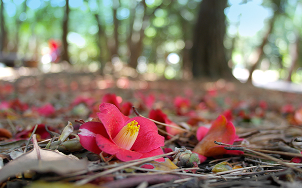

<div class="tour-detail">
    <ul>
        <li class="row">
            <h4 class="modal-title">오동도</h4>
        </li>
        <li class="row">
            <div class="img_wrap"></div>
        </li>
        <li class="row">
            <div class="chip">여수10경</div>
            <div class="chip">동백꽃</div>
            <div class="chip">섬</div>
            <div class="chip">등대</div>
        </li>
        <li class="row">
            <p><span style="font-family: 나눔바른고딕, NanumBarunGothic, NanumBarunGothicOTF; font-size: 14pt; color: rgb(255, 0, 0);">사계절 사람들이 찾아가는 곳!!!</span>&nbsp;</p>
            <p><span style="font-family: 나눔바른고딕, NanumBarunGothic, NanumBarunGothicOTF;">&nbsp;</span></p>
            <p><span style="font-family: 나눔바른고딕, NanumBarunGothic, NanumBarunGothicOTF;">다시 만나는 오동도는 한층 더 마음에 와 닿는다. 새로 단장된 황톳길, 잘 다듬어진 시누대길</span></p>
            <p><span style="font-family: 나눔바른고딕, NanumBarunGothic, NanumBarunGothicOTF;">빽빽한 나뭇잎 사이로 쏟아져 내리는 황금빛 눈부신 햇살은 결코 이 지상의 것이 아니다.</span></p>
            <p><span style="font-family: 나눔바른고딕, NanumBarunGothic, NanumBarunGothicOTF;">멀리서 바라보면 오동잎을 닮았다하여 오동도라 불리운다. 섬전체에 동백나무가 빼곡하여 동백섬으로도 유명한 여수의 상징이다.&nbsp;</span></p>
            <p><span style="font-family: 나눔바른고딕, NanumBarunGothic, NanumBarunGothicOTF;">오동도에 서식하는 동백은 말 그대로 동백(冬柏)으로 온섬을 붉게 물들인다.</span></p>
            <p>&nbsp;</p>
            <p><span style="font-family: 나눔바른고딕, NanumBarunGothic, NanumBarunGothicOTF;">한국의 아름다운 길 100선에 선정된 아름다운 오동도</span></p>
            <p><span style="font-family: 나눔바른고딕, NanumBarunGothic, NanumBarunGothicOTF;">여수의 중심가에서 약 10분쯤의 거리에 위치해 있으며, 오동도 입구 주차장에서 약 15분 정도, 방파제 길을 따라 걸으면 도착한다. 이 길은 한국의 아름다운 길 100선에 선정된 바 있을 만큼 운치가 있으며, 한려해상국립공원에 속해 있다. 동백을 이야기하자면 항상 가장 먼저가 여수 오동도다. 섬 전체를 이루고 있는 3천여그루의 동백나무에선 1월부터 꽃이 피기 시작해 3월이면 만개한다. 오동도가 한눈에 내려다보이는 언덕에는 자산공원이 조성되어 있어 향일암과 더불어 한려수도 서쪽 관광루트의 시작점이 되고 있다.</span></p>
            <p>&nbsp;</p>
            <p><span style="font-family: 나눔바른고딕, NanumBarunGothic, NanumBarunGothicOTF;">오동도는 768m의 방파제로 육지와 연결되어 있다. 방파제 입구에서 동백열차를 타거나 걸어서 섬으로 들어갈 수 있다. 섬에 들어서면 방파제 끝에서 중앙광장으로 연결된 큰길 옆으로 오동도 정상으로 오르는 산책로 가 나있다.</span></p>
            <p>&nbsp;</p>
            <p><span style="font-family: 나눔바른고딕, NanumBarunGothic, NanumBarunGothicOTF;">오동도에는 두개의 전설이 전해진다. 고려 말. 오동도에 오동 열매를 따 먹으러 봉황이 날아든다는 소문을 듣고 공민왕에게 고하여 공민왕이 오동도에 있는 오동나무를 베어버리라고 명하였다. 아리따운 한 여인이 도적떼로부터 정절을 지키기 위해 벼랑 창파에 몸을 던졌고, 뒤늦게 이 사실을 알게 된 남편이 오동도 기슭에 정성껏 무덤을 지었는데 북풍한설이 내리는 그해 겨울부터 하얀 눈이 쌓인 무덤가에 동백꽃이 피어나고 푸른 정절을 상징하는 시누대가 돋아났단다. 그런 연유로 동백꽃을 '여심화' 라고도 부른다는 전설이다.</span></p>
            <p>&nbsp;</p>
            <p><span style="font-family: 나눔바른고딕, NanumBarunGothic, NanumBarunGothicOTF; font-size: 14pt; color: rgb(239, 0, 124);">섬외곽을 도는 순환산책로를 따라...</span></p>
            <p><span style="font-family: 나눔바른고딕, NanumBarunGothic, NanumBarunGothicOTF;">&nbsp;</span></p>
            <p><span style="font-family: 나눔바른고딕, NanumBarunGothic, NanumBarunGothicOTF;">음악분수대가 있는 중앙광장을 지나 맨발공원을 따라 올라 가다 보면 오동도의 애달픈 전설비가 나오고 시누대로 무성한 양 갈래의 길을 걷다보면 오동도의 또 다른 매력에 빠져 들기도 한다. 시누대 산책로를 따라 걷다보면 시누대 터널을 지나 섬 외곽을 도는 순환산책로로 나뉜다.</span></p>
            <p>&nbsp;</p>
            <p><span style="font-family: 나눔바른고딕, NanumBarunGothic, NanumBarunGothicOTF;">오동도에는 동백과 더불어 시누대가 곳곳에 자라 있는데, 옛날 이곳에서 이순신이 군사를 조련하고 시누대를 잘라 화살로 사용했다고 한다. 시누대 터널을 지나면 후박나무, 동백나무 군락지를 만날 수 있고, 오동도에서 가장 넓고 길게 바다로 나간 갯바위가 나오고 곧, 하얀 등대가 서 있는 오동도 정상에 닿는다. 오동도 등대 주변의 산책로를 따라 걷다보면 바람골 입구에서 중앙광장과 오동도 서쪽 방파제 입구로 갈라지는 산책로 길이 나오고 중앙광장으로 내려오면 거북선과 판옥선의 모형과 “약무호남 시무국가”란 비석이 중앙광장에 있고 그 옆으로는 음악분수대가 설치되어 동절기를 제외하고 운영하고 있다.&nbsp;</span></p>
            <p><span style="font-family: 나눔바른고딕, NanumBarunGothic, NanumBarunGothicOTF;">중앙광장에는 여수엑스포기념관이 있어 여수엑스포 유치성공 과정과 오동도에 관한 영상과 입체영상을 무료로 관람할 수 있으며, 4D영상 체험관도 가족단위로 체험할 수 있다.</span></p>
            <p><span style="font-family: 나눔바른고딕, NanumBarunGothic, NanumBarunGothicOTF;">중앙광장의 또 다른 매력인 유람선선착장에서 오동도를 일주하거나 돌산대교, 향일암, 금오열도를 유람할 수 있는 유람선이 출발한다. 이곳 중앙광장에서 역으로 오동도 순환산책로도 감상할 수 있다. 중앙광장 동쪽의 방파제는 광양만과 남해바다로 쭉 뻗어나가 낚시 포인트로도 유명하다.</span></p>
            <p>&nbsp;</p>
            <p><span style="font-family: 나눔바른고딕, NanumBarunGothic, NanumBarunGothicOTF;">오동도 안에 자리한 테마공원에는 25미터의 높이를 자랑하는 등대가 있고, 음악 분수공원, 맨발공원이 있다. 1952년 처음으로 불빛을 밝힌 오동 등대는 여수항과 광양항을 드나드는 선박의 길잡이 역할은 물론 해마다 200여만 명의 관광객이 찾아 지역의 대표적인 명소로 자리 잡고 있다.</span></p>
            <p>&nbsp;</p>
            <p><span style="font-family: 나눔바른고딕, NanumBarunGothic, NanumBarunGothicOTF;">또한 2.5km에 이르는 자연 숲 터널식 산책로는 동백이 지는 날 소중한 사람의 손을 잡고 걷기에 좋은 장소이다. 미로 같은 산책길 옆으로 펼쳐진 해안은 대부분 암석해안으로 바위와 병풍바위와 소라바위, 지붕바위, 코끼리 바위 등 기암절벽이 어우러져 절경을 이룬다.</span>&nbsp;</p>
            <p>&nbsp;</p>
            <p><span style="font-family: 나눔바른고딕, NanumBarunGothic, NanumBarunGothicOTF;">겨울부터 봄까지 3000여 그루의 동백나무가 발그레한 볼을 붉히는 오동도. 2011년 여수시는 오동도 산책로에 깔려 있던 기존 콘크리트 구조물을 모두 걷어내고, 인공 황톳길로 이루어진 웰빙 트레킹 코스를 조성해 찾는 이들에게 한층 더 기쁨을 주고 있다.</span>&nbsp;</p>
        </li>
        <li class="row">
            <div class="right">
                <a href="#!" class="light-blue darken-1 waves-effect waves-green btn-small layer_close">닫기</a>
            </div>
        </li>
    </ul>
</div>